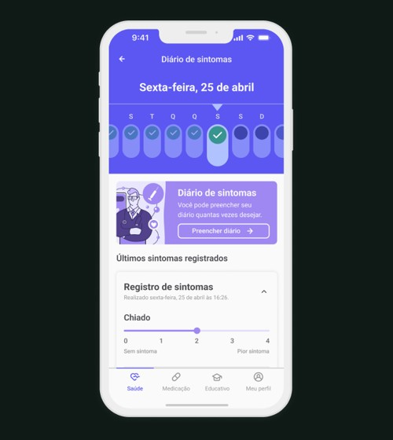
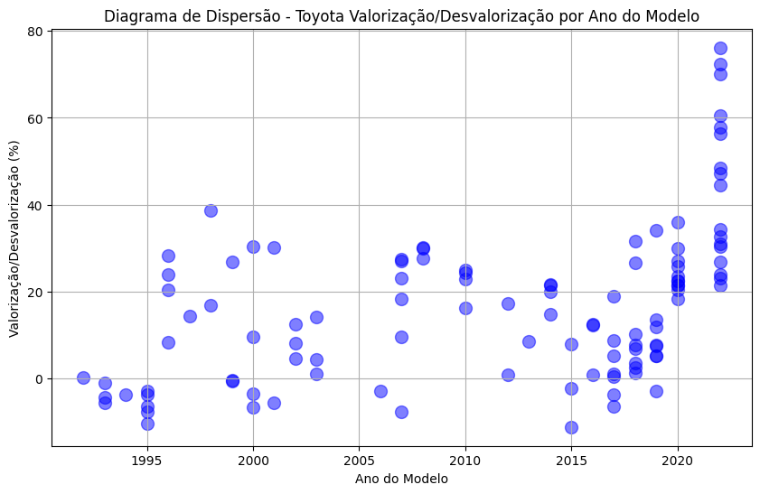
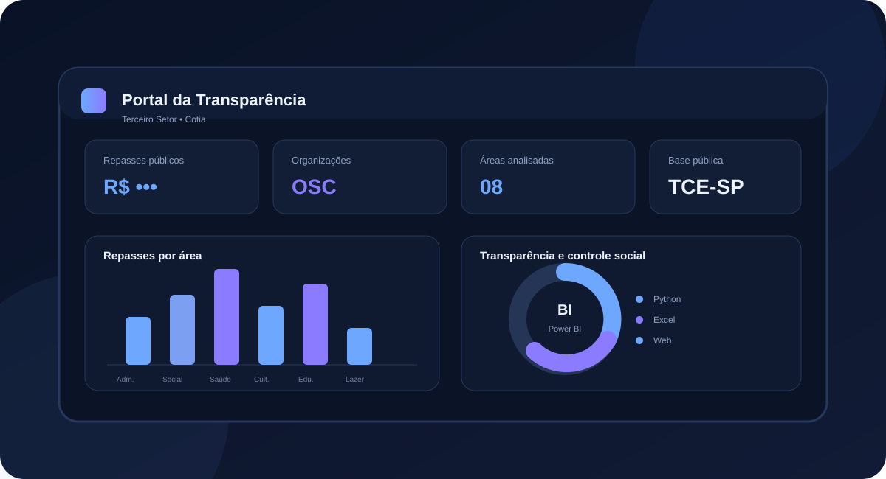
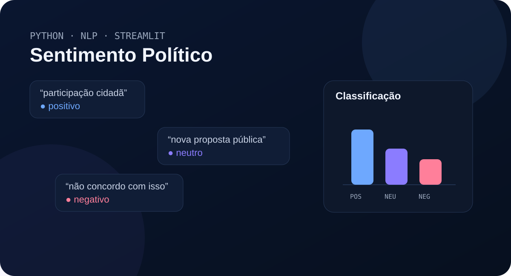
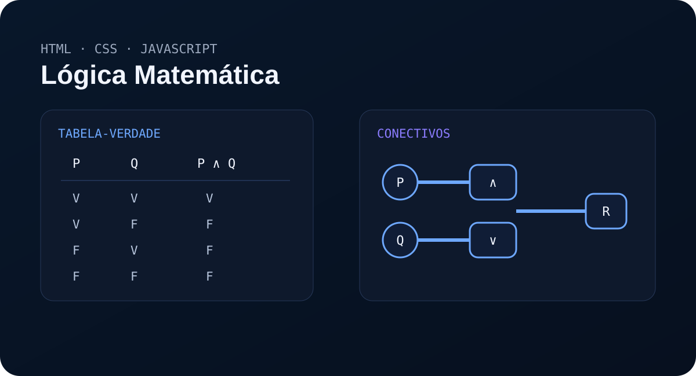

Olhar para indicadores
Acompanhar qualidade e performance da operação me acostumou a pensar em métricas e resultados, não só em tarefas.
Analista de Operações I na Tecban · Graduando em Ciência de Dados
Há mais de 3 anos acompanho processos, qualidade e performance em uma operação real. Agora uno essa vivência a Python, SQL e Power BI para transformar números em decisões.
Sobre mim
Comecei como Jovem Aprendiz e cresci até Analista de Operações I, sempre ligado à administração, à qualidade e ao desempenho das movimentações de máquinas (ATM) para clientes. Esse dia a dia me ensinou a lidar com prazos, volume de informação e responsabilidade com números.
Na FATEC Cotia (Ciência de Dados, noturno), coloquei a teoria em prática com projetos de análise, banco de dados e dashboards. Busco uma oportunidade de estágio ou posição júnior em dados, onde eu possa aplicar esse conjunto de conhecimentos.
Acompanhar qualidade e performance da operação me acostumou a pensar em métricas e resultados, não só em tarefas.
Organizar faturamento e movimentações exige dados corretos e conferidos, o mesmo cuidado necessário na limpeza de bases.
Conheço como uma operação funciona por dentro, o que ajuda a entender qual pergunta o dado precisa responder.
Experiência profissional
Ciência de Dados — FATEC Cotia (Centro Paula Souza) · presencial/noturno · Ago/2024 – Dez/2027.
Disciplinas relevantes: Estatística, Bancos de Dados Relacionais, Lógica de Programação, Lógica Matemática, Processamento de Linguagem Natural e Estruturas de Dados.
Idiomas: Português (nativo) · Inglês (intermediário) · Espanhol (básico)
Projetos
Cada projeto mostra o problema, o que fiz e as ferramentas usadas. Abra o case para ver os detalhes.





Habilidades
Contato
Estou em busca de estágio ou vaga júnior em dados. Fico feliz em falar sobre meus projetos.